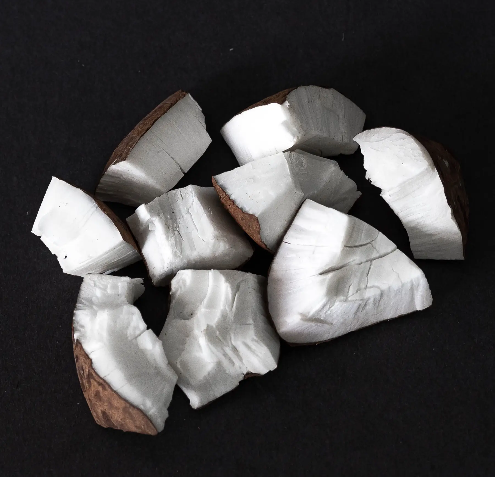
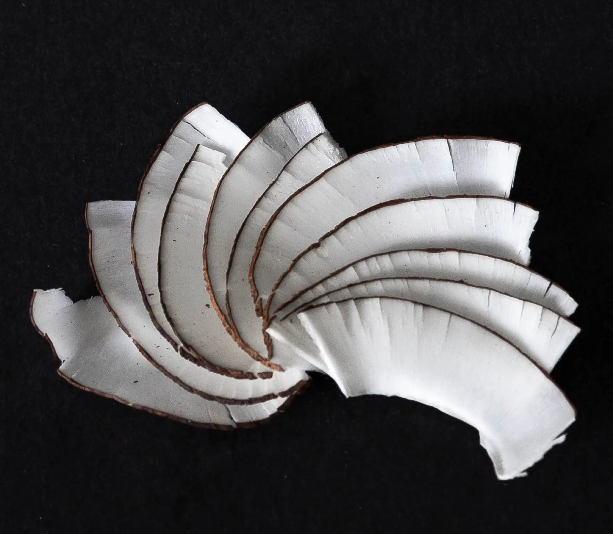
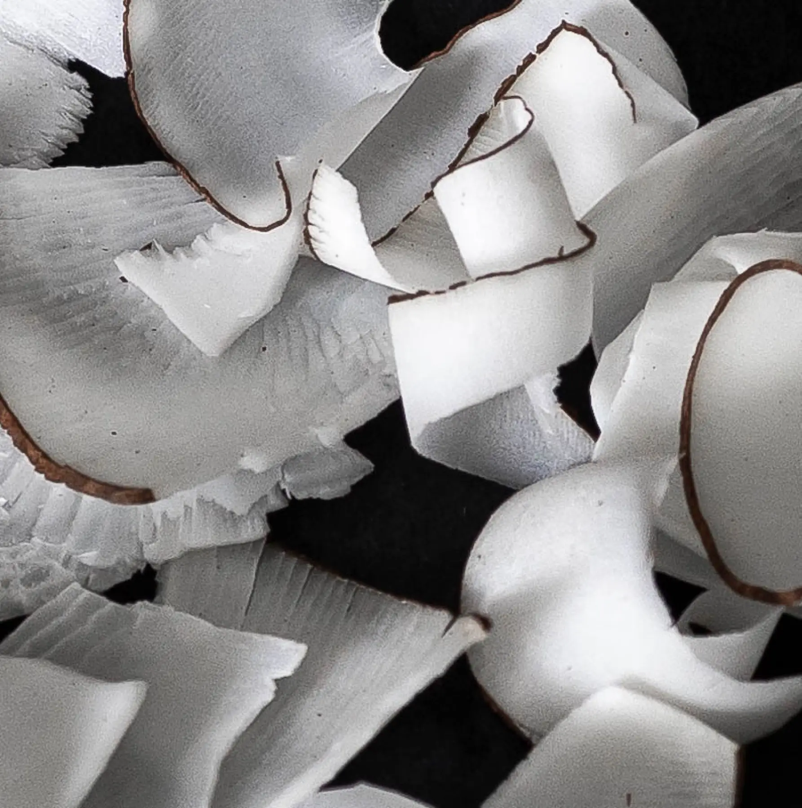
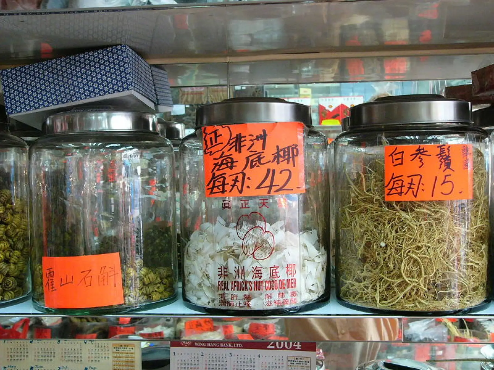
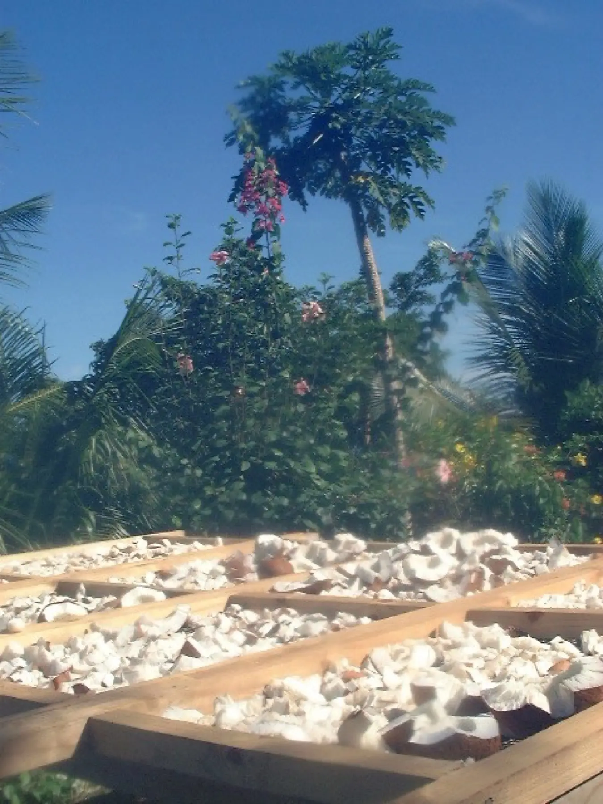

KERNEL

海底椰
White, sun-dried kernel from the world's largest seed
No treatment and no chemicals. Just 95% desiccated, 100% natural Coco de Mer.
Four cuts · Minimum order 1 kg
Choose your cut.
Every cut is white, 95% desiccated and 100% natural (Lodoicea maldivica). Mix cuts in one order if you like.


海底椰 · Hǎi dǐ yē
A treasure ofAsian kitchens.
In southern Chinese markets the kernel is known as 海底椰, and for generations it has been simmered into soups, teas and tonics. It has traditionally been believed to have nourishing and restorative qualities, although these have never been scientifically studied.
“Mild at first, with notes of hazelnut, chestnut and goat's cheese.”
Once dry, the slices become as hard as ‘vegetable ivory’, so they are best soaked or simmered.
Read: Is the Coco de Mer eatable?海底椰（塞舌尔椰子）果肉
Chinese summary · Lodoicea maldivica
纯天然白色果肉，自然风干（95%干燥），不添加任何化学物质。
- 优质大块约7厘米
- 优质长片7–15厘米
- 切片4–7厘米，厚0.5–0.7毫米
- 碎片1–3厘米
最低订购量：1公斤。欢迎批发及长期订单。请填写订购表或通过 WhatsApp 联系我们，我们将发送含运费的发票。
From forest floor to your order
With you within 50 days.
01
Fallen naturally
Nuts ripen for 6–10 years and are only collected once they fall.
02
Dried naturally
The kernel is extracted and dried with natural processes, no chemicals.
03
Sliced & packed
Cut to order into chunks, slices or flakes.
04
Shipped
Packed and sold within 50 days for a fresh, genuine product.

Order request
Tell us whatyou need.
Minimum order 1 kg per request. We reply with an invoice that includes shipping to your country. Wholesale and repeat orders welcome.
Prefer to chat? WhatsApp +248 259 5547
Almost there: press send.
Your order request is ready in WhatsApp. Once it reaches us we reply with your invoice, including shipping. 谢谢！
Nothing opened? Try again, or message us directly on WhatsApp +248 259 5547 or at info@cocodemercosmetics.com.